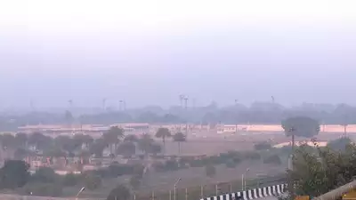
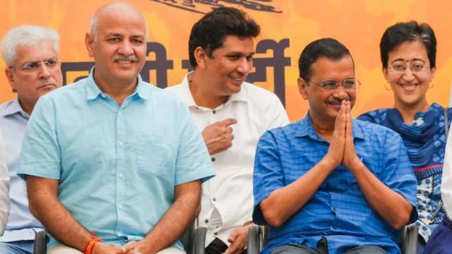

Delhi's air quality in 'poor' category; smog layer reduces visibility

NEW DELHI: Delhi's air quality was reported in the 'poor' category on Tuesday, as a thin layer of smog blanketed various parts of the city, reducing visibility.
According to the Central Pollution Control Board (CPCB), the national capital recorded an Air Quality Index (AQI) of 224 at 8am.
Several areas in Delhi registered poor AQI readings at 8am, including ITO at 254, Alipur at 214, Chandni Chowk at 216, and the Jawaharlal Nehru Stadium at 203.
Nevertheless, some areas experienced better air quality, falling under the 'moderate' category. DTU registered an AQI of 169, whilst Lodhi Road and Najafgarh recorded readings of 123 and 142, respectively.
The Supreme Court granted permission to the Commission for Air Quality Management (CAQM) to ease the GRAP stage IV measures to GRAP stage II in Delhi-NCR, following improvements in the Air Quality Index (AQI).
Following the Supreme Court's approval, the CAQM promptly withdrew both GRAP Stage IV and III restrictions from the Delhi-NCR region within hours of the decision.
Nevertheless, the implementation of GRAP Stages II and I shall continue throughout the National Capital Region.
In BJP’s Delhi camp, candidates yet to be finalised but party confident of ‘direct fight’ in 40+ seats

Even as it is still identifying potential candidates for the Delhi Assembly elections, the Delhi BJP is “confident” it has a “direct fight on more than 40” of the Capital’s 70 constituencies.
Sources, citing internal surveys, said the BJP foresees bright prospects on “40-47 seats” depending on separate scenarios. Currently, the party has seven MLAs in the 70-member House. “If AAP and Congress form an alliance, our surveys posit the BJP will be neck and neck with them in 47 Assembly constituencies since the vote is likely to be split internally between both parties,” a senior BJP leader said.
“On the other hand, given the current scenario where the AAP, BJP and Congress are in a three-corner fight, the surveys predict a direct contest between the AAP and BJP on around 40 seats. There are only a handful of seats such as New Delhi, Okhla, Greater Kailash and Malviya Nagar, among others, where the AAP is considered comfortably ahead for the time being,” the leader added.
The BJP core committee comprising its national general secretary (organisation) B L Santhosh, Delhi BJP president Virendra Sachdeva, Delhi BJP general secretary (organisation) Pavan Rana, Delhi incharge Baijayant Panda, MPs Harsh Malhotra, Manoj Tiwari, Kamaljeet Sehrawat, Yogender Chandoliya and senior leaders Arvinder Singh Lovely, Dushyant Gautam, Leader of Opposition Vijender Gupta and former Delhi BJP president Satish Upadhyay, among others, met at the party’s state headquarters Monday
According to party insiders, discussions so far included the names of Sachdeva as a potential pick from Patparganj, Krishna Nagar or Kasturba Nagar; former DCW chief Barkha Shukla Singh or Anil Sharma from R K Puram; Impreet Bakshi from Jangpura; Satish Upadhyay from Malviya Nagar; former West Delhi MP Parvesh Verma from New Delhi; incumbent MLA Anil Bajpai from Gandhi Nagar; Arvinder Singh Lovely from Krishna Nagar; Manjinder Singh Sirsa from Rajouri Garden; and Ravinder Lohia from Delhi Cantt.
The list will be revealed only after the final go-ahead from the national leadership this week. “The State Election Committee is likely to meet either Tuesday or Wednesday which will be followed by a meeting of the Central Election Committee to be presided by the Prime Minister, Home Minister and Defence Minister, by December 14 or 15. The first list is likely to be announced the same day,” a source said.
AAP’s second list for Delhi polls out: 13 sitting MLAs dropped, Manish Sisodia shifted to Jangpura

The Aam Aadmi Party (AAP) has dropped 13 sitting MLAs in its second list of 20 candidates ahead of the Delhi Assembly elections that are expected to take place in February next year. The party has also switched the seats of two sitting MLAs, Manish Sisodia and Rakhi Bidlan. While former Deputy Chief Minister Sisodia will contest from Jangpura instead of Patparganj, Deputy Speaker Bidlan will contest from Madipur instead of Mangolpuri.
AAP had announced 11 candidates in the first list. The party has, so far, dropped 16 sitting legislators in the two lists it has declared. This does not include Chandni Chowk MLA Parlad Singh Sawhney and Krishna Nagar MLA SK Bagga whose sons have replaced them.
Facing what most of its leaders believe is its toughest election yet, the AAP’s second candidate list is an indication of what comes next.
“The second list has ripped the bandaid off. It is also the list where the most widespread changes have been seen. It is a clear indication that MLAs whose popularity has dipped are going to be replaced. The only criteria for candidate selection this time are popularity and winnability. We have decided to drop anyone who has a negative image among the people, be it for any reason,” said a senior party leader.
“Councillors actively working in these constituencies were chosen based on their performance, as the party has been consistently gathering micro-feedback from the public in every seat… Based on public feedback and the positive performance of these councillors, the party has decided to field them as candidates,” AAP Delhi Convener Gopal Rai said.
AAP has, so far, given 13 tickets (out of 31) to leaders who have joined from other parties. This includes Brahm Singh Tanwar (Chhatarpur) and Jitender Singh Shunty (Shahdara) from BJP, and Surender Singh Bittu (Timarpur) and Chaudhary Zubair Ahmed (Seelampur) from Congress.
The replacements in Timarpur and Shahdara did not come as a surprise as sitting MLAs Dilip Pandey and Ram Niwas Goel had opted out of the race last week.
Deoli MLA Prakash Jarwal, who was recently convicted by a Delhi court in an abetment to suicide case, is among AAP’s three-time MLAs to be dropped. Bidlan, who has won from Mangolpuri thrice, also has a new constituency to fight from.
Jangpura’s Praveen Kumar, a two-time MLA, has also been dropped, with three-time MLA Sisodia replacing him.
Among the candidates, two have been declared in a seat where the BJP is in power — Rohini and Gandhi Nagar.
Asked about the possibility of sitting MLAs rebelling against the party’s decision, a senior party leader said, “These possibilities will exist in every party but we have to see what the best decision for us is. Loyal members have stuck with the party through thick and thin and are with the party even in this decision. There may be a few disgruntled elements but we are confident in our decision.”